2024.06 — NOW
Banxing Youth
Publicity & content support
Completed 10+ rounds of poster production and revision, and supported podcast editing and course coordination.
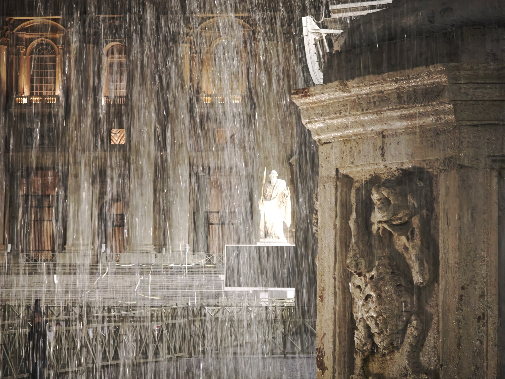
SPATIAL · VISUAL · EXPERIENCE
Zhennan Chen. Environmental design undergraduate.
Exploring connections between space, imagery and digital media.
PERSONAL PHOTOGRAPHY · LIGHT / STRUCTURE / MEMORY
SCROLL TO EXPLORE01 / ABOUT
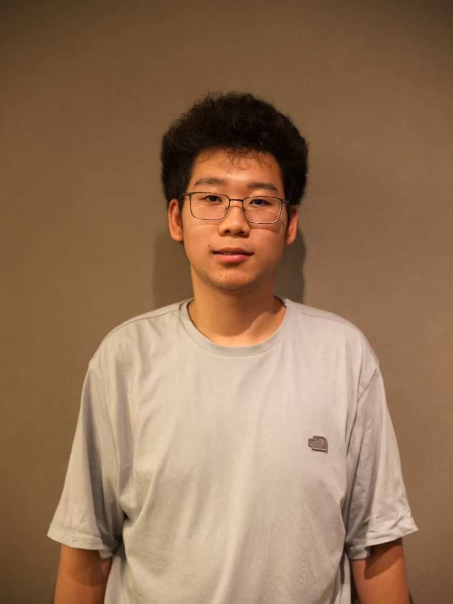
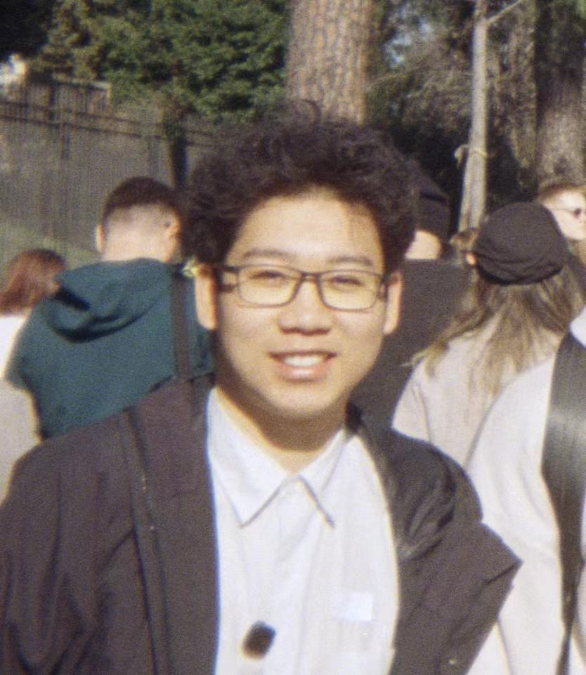
I start by understanding people and context, then organize complex information into clear spatial relationships, visual stories and experiences.
I study Environmental Design at Shenyang Aerospace University. My work spans adaptive reuse, exhibitions, 3D modeling, photography, audiovisual content and web prototypes. I hope to join a design team and keep learning how to develop concepts into complete experiences.
EXPERIENCE / SELECTED
2024.06 — NOW
Publicity & content support
Completed 10+ rounds of poster production and revision, and supported podcast editing and course coordination.
2 YEARS+
Member
Photographed and filmed campus sports events, speeches and other activities.
2025.09 — 11
Part-time retail support
Counted and organized clothing to support daily store operations.
02 / SELECTED WORK
From spatial research to models, images and web prototypes, these projects trace how I frame problems, develop concepts and refine them through feedback.
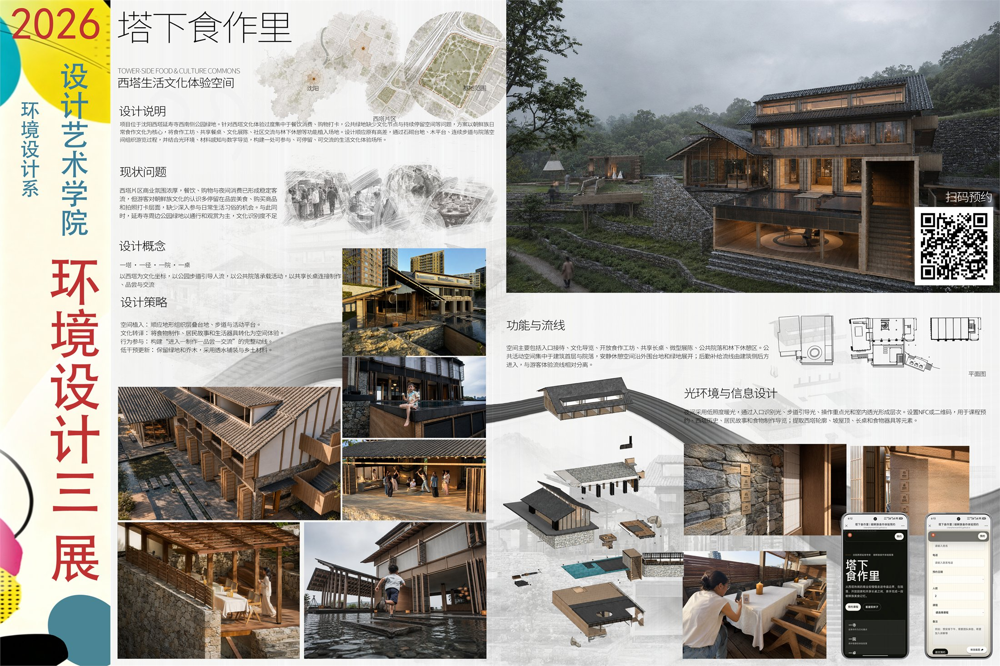
01 Tower Village Food CommonsCultural experience concept · Web presentation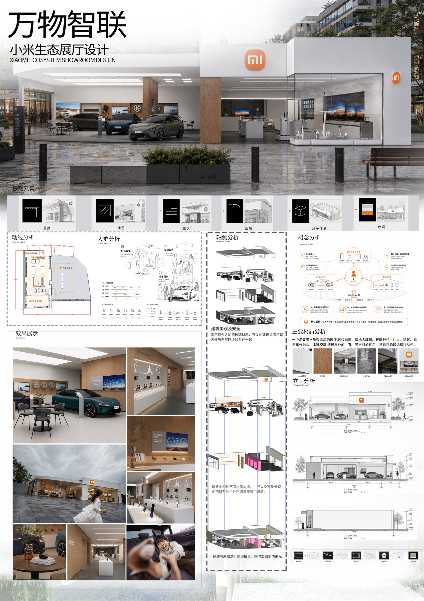
02 Connected LivingTechnology exhibition · Models & visuals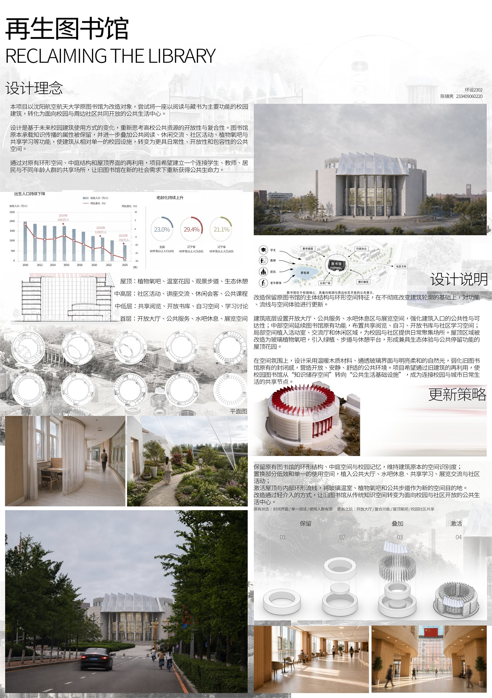
03 Regenerative LibraryAdaptive reuse · Independent exterior modelingMORE WORK / VISUAL INDEX
OPEN THE FULL PORTFOLIO ↗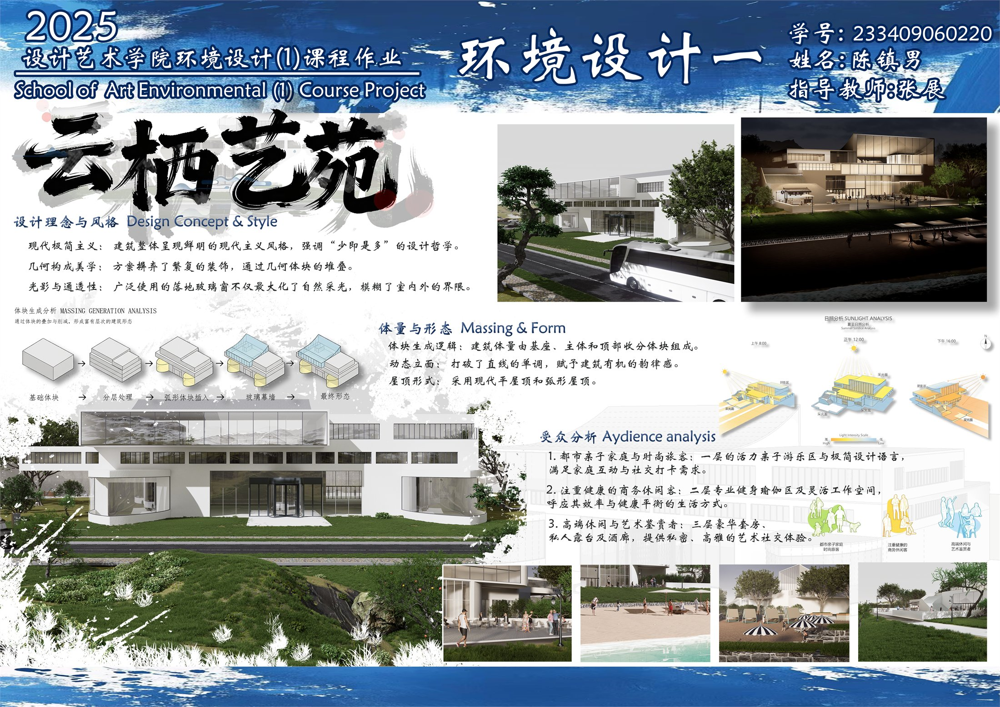
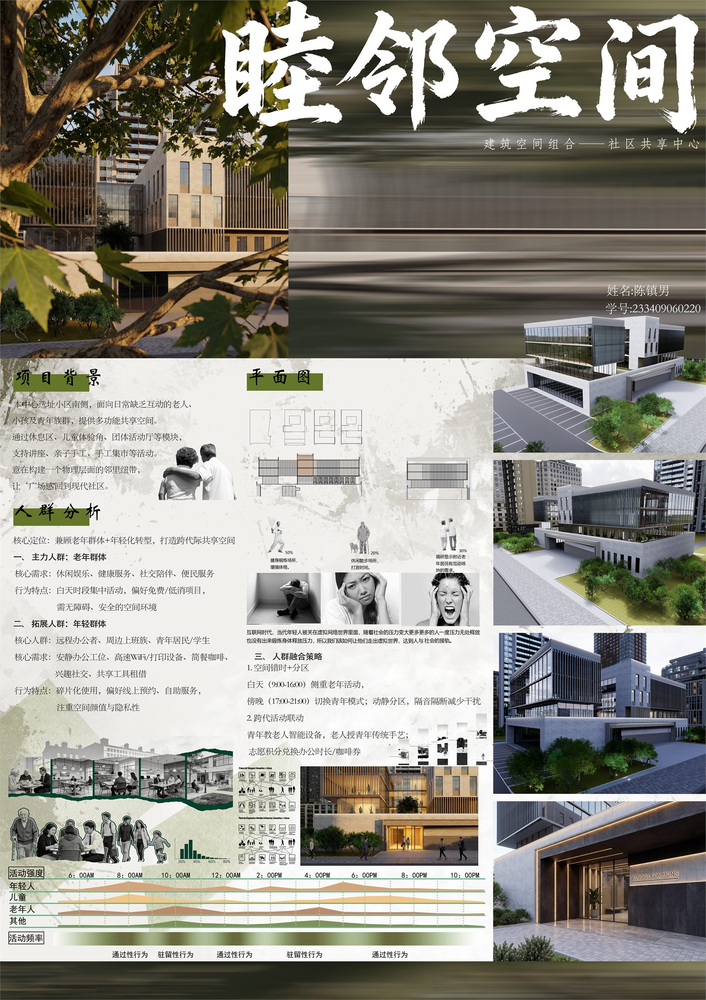
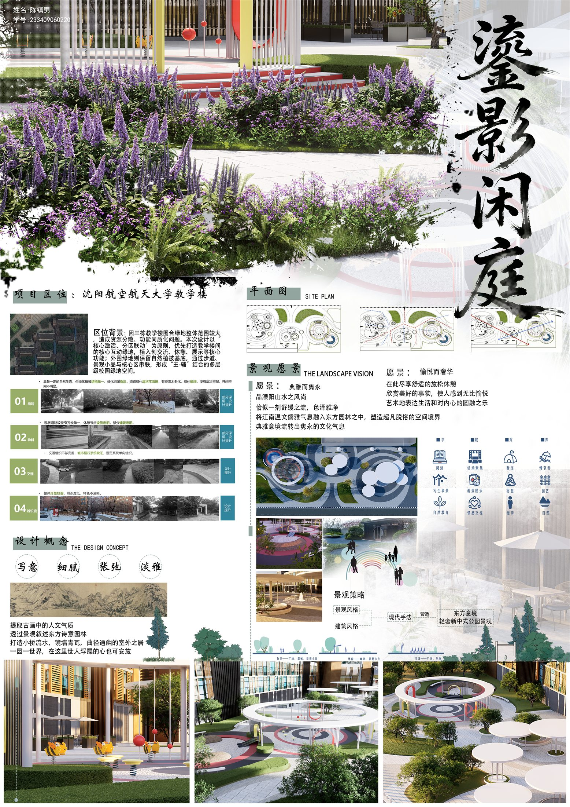
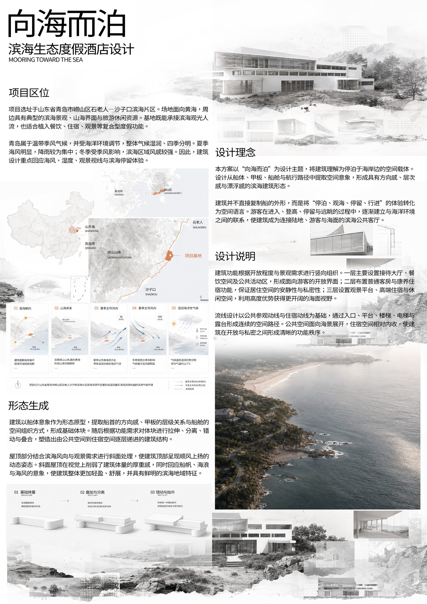
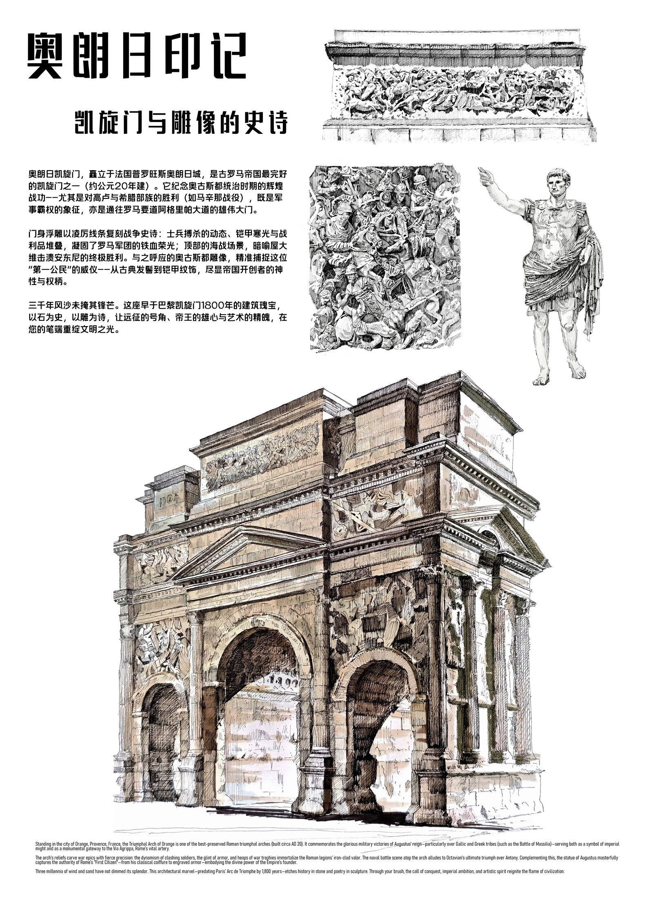
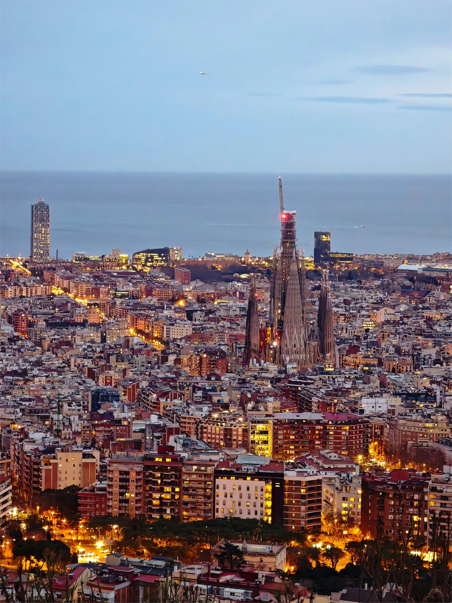
03 / APPROACH
Starting with movement, behavior and emotion, I translate functional relationships into spatial experiences.
I use composition, photography and layout to create hierarchy and make ideas easier to see and understand.
I combine modeling, AI images and websites to turn static concepts into experiences people can explore.
I put early drafts in front of others, then refine the structure, model and presentation in response.
TOOLS & WORKING MEDIA
04 / PHOTOGRAPHY
I document how light changes materials, scale and the way a place feels. Photography keeps training my eye for composition, rhythm and the moment. View the photography chapter ↗
05 / CONTACT
Seeking opportunities in spatial, visual, exhibition, content or experience design.
2892965790@qq.com